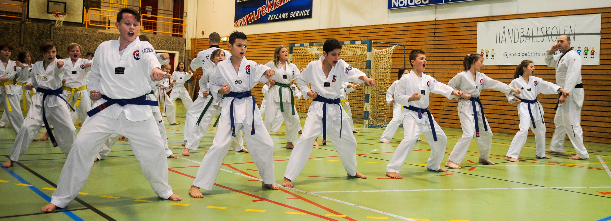
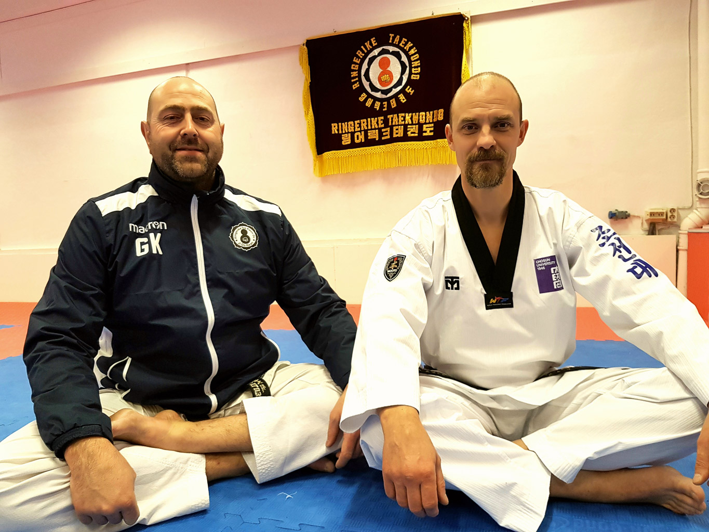
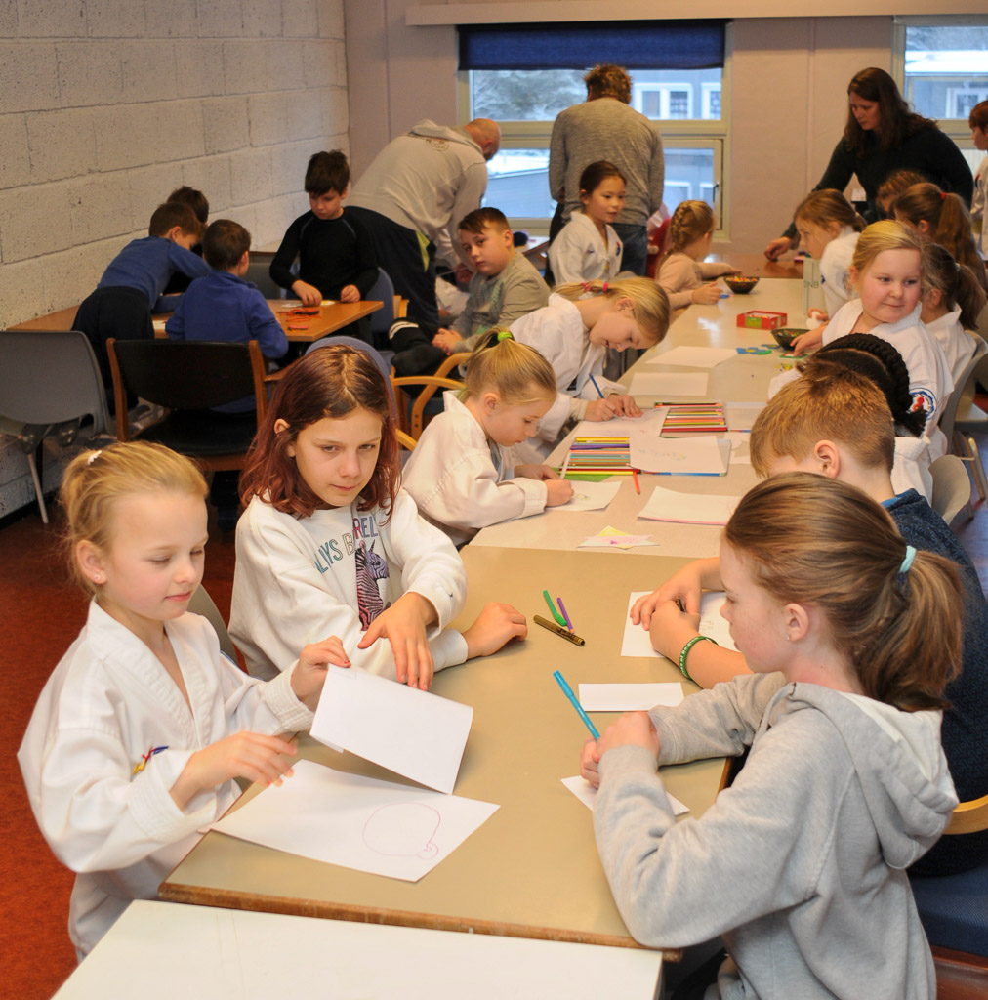
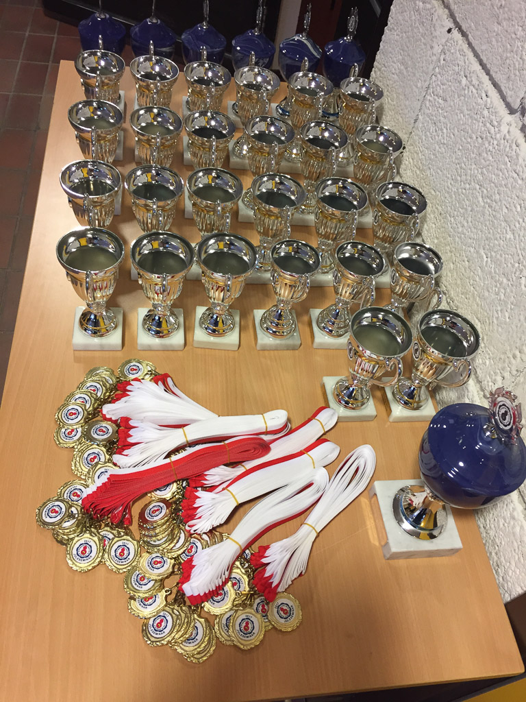
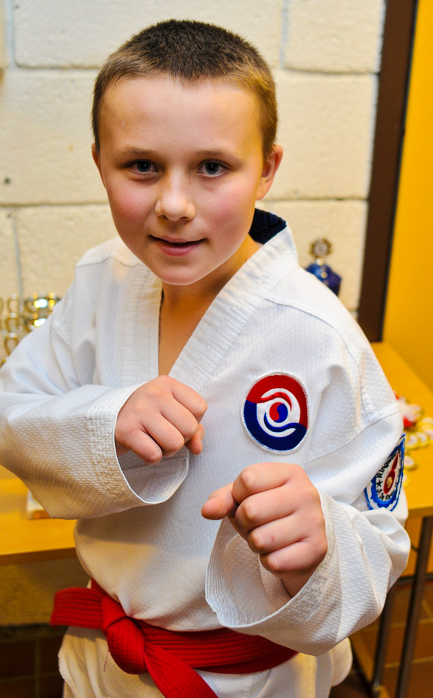
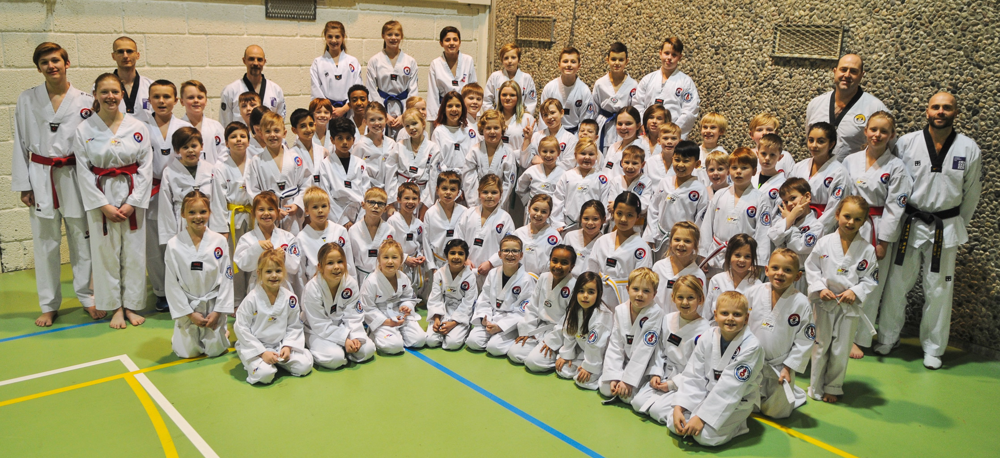

Innlegg
Rekordoppslutning på årets juleseminar
16. og 17. desember arrangerte Ringerike Taekwondo Klubb juleseminar for Tiger- og Barnegruppa med rekordoppslutning. 68 barn deltok på arrangementet som ble avsluttet med gradering på søndag. – Alle besto graderingen, sier klubbens leder Geir Karlsen og instruktør Reinhardt G. Skøien. – Enkelte barn presterte så bra at de ble dobbeltgradert.
Det er 5. året på rad Ringerike Taekwondo arrangerer juleseminar med overnatting. Oppslutningen har vært jevnt økende siden oppstart, sier Karlsen og Skøien. De mener kampsport, slik den praktiseres i klubben, er med på å styrke barns idrettslige ferdigheter. – Vi fremmer disiplin, respekt og toleranse for hverandre. Dette er egenskaper som kommer godt med både på skole og fritid. Til sammen var vi fire voksne sortbeltetrenere og fem hjelpetrenere med rødt belte, som drillet barnas kampsportferdigheter.
Takk til alle foreldre Både Karlsen og Skøien ønsker å rette en spesiell takk til alle foreldre, som ryddet og vasket hallene før trening, stilte opp som nattevakter, hjalp til med frokost og hadde ansvaret for brus- og vaffelsalg i kiosken. – Uten deres hjelp ville vi aldri klart å fullføre juleseminaret på en så god måte til glede for alle forventningsfulle og treningsglade barn. Høydepunktet for dem var da Taekwondo nissen kom innom med sine gaver.
Sosial ramme Karlsen og Skøien kan fortelle at juleseminaret er en forberedende trening til gradering på søndag. – Seminaret er også med på å skape en sosial ramme for barna hvor de blir bedre kjent med hverandre gjennom aktiviteter som juleverksted, konkurranser, leker og filmfremvisning. På ettermiddagen ble det servert pizza, boller og brus. Det ble også arrangert konkurranser i mønster og knekking av planker. Kvelden ble avsluttet med film på storskjerm i treningshallen.


Godt disiplinerte og motiverte – For at juleseminaret skulle bli en suksess, måtte elevene følge våre instrukser til punkt og prikke. Tiger- og Barnegruppa er godt disiplinerte, motiverte og forbilder for vår idrett. Fysisk og psykisk kroppsbeherskelse er avgjørende for å lykkes med kampsporten. Dette er ferdigheter vi jobber med å utvikle på barna. Positive tilbakemeldinger Juleseminaret er Ringerike Taekwondos store begivenhet og er kjempepopulært blant både utøvere og foreldre. – Vi har fått mange positive tilbakemeldinger på mail og Facebook fra foresatte som synes dette er et kjempeflott arrangement. Derfor er juleseminaret kommet for å bli, avslutter Karlsen og Skøien.
Artikkel skrevet av Trond Schieldrop. ts@caldera.no Medlem i klubben